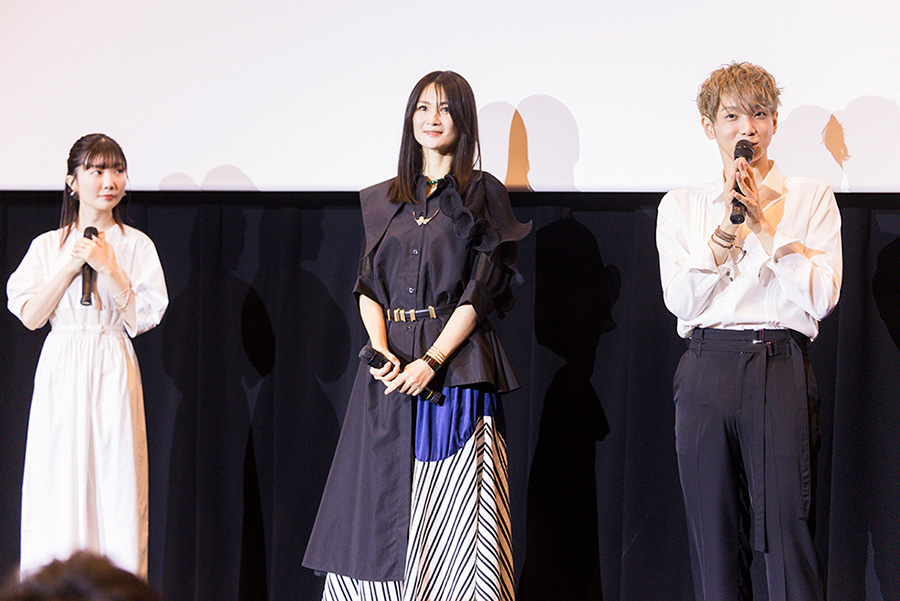
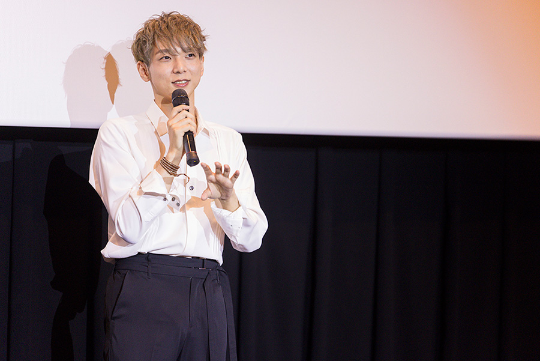
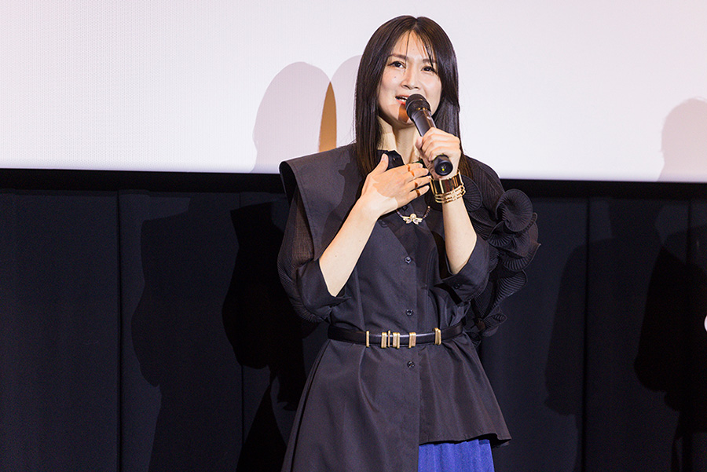
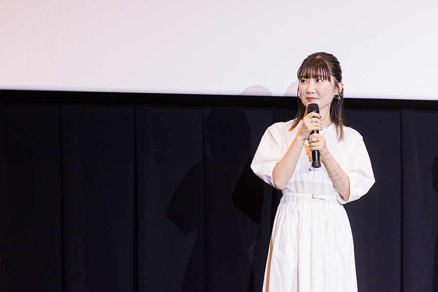

R e p o r t
「Fate/strange Fake -Whispers of Dawn-」
国内最速上映レポート
「Fate/strange Fake
-Whispers of Dawn-」
国内最速上映レポート
７月２日（日）に「Fate/strange Fake -Whispers of Dawn-」国内最速上映が 行われ、上映後のトークショーにはティーネ・チェルク役 諸星すみれさん、ランサー役 小林ゆうさん、ジェスター・カルトゥーレ役 橘龍丸さんが 登壇しました。 そのトークイベントの模様をお届けいたします。

上映後、観客の大きな拍手を受け登壇したキャストの皆さん。
完成した映像を観た感想についてティーネ役の諸星さんは「本当に迫力がすごくて、作画も綺麗ですし、音楽もとってもかっこいい。特にランサーの『フルスロットルで行くよ』が大好きで、何回も見たくなります」と語りました。
諸星さんの挙げたランサーとアーチャーのバトルシーンについて、ランサー役の小林さんは「このシーンを描いていただき本当にありがとうございます！という思いです。お名前を言わせていただきますが…ギルガメッシュさんと一緒にエヌマ・エリシュさせていただいて、私にとってかけがえのないシーンになりました。台本をいただいた時からドキドキして、収録に臨ませていただいて、そして完成した映像を観たらもうすごい音楽をつけてくださっていて、感動しました」と熱い思いを語ります。
Fate作品の大ファンというジェスター役の橘さんは「僕はPS2版からFateに触れて、そこからPC版もプレイして、僕の10代はFateで築かれていると言ってもいいくらいなんです。そんなシリーズに関われて本当に嬉しい」と明かし、「完成した映像を観ていろんな感情が溢れてしまい、涙しました。ギル様たちの宝具のぶつけ合いには興奮しましたし、Fateシリーズの面白さである、それぞれの人物の思惑も垣間見える内容で、すごくドキドキしました」と語りました。
今回、オーディションで役に決まったという諸星さんと橘さん。オーディションについて諸星さんは、「特にキャラクターをつくるとか、声をつくるとかもなく、このまんまやった感じで…」と振り返り、「でもティーネはすごい子で、あの年齢で背負うものも大きくて、幼さと芯の強さのギャップも素敵だなと思うし、時折見せる可愛らしい表情も魅力的」と魅力を語ると、
小林さんはランサーの魅力について、ギルガメッシュとの絆が外せないと語りつつ、「エルキドゥさん大好きなんです。だんだん変わっていくお姿に繊細な部分が見えてきて、その変化の中で自分というものを受け止めている。そういうエルキドゥさんと一緒に歩かせていただいているのがすごく幸せなことだなといつも思っています」と長く携わっているキャラクターへの愛を語ります。
一人ずつ行ったという収録について聞かれた小林さんは、「ギルガメッシュさんとのシーンは関さんのお声が聞こえてくるような気持ちで、一人じゃないなと感じながらお芝居させていただきました」と答え、
橘さんは「本当に自由奔放にやらせていただきました。監督から『尺はこちらが調整するから好きなようにやってくれ！』という温かいお言葉もいただいて、思いっきりやらせてもらえて、すごく楽しかったです」と振り返ります。
気になるキャラクターについて、橘さんは「椿のサーヴァントが謎すぎる。形をまだ成していないので、こいつは一体何者だ？というのがすごく気になります。めちゃめちゃ強そうだけど、意外と弱いのか…それすらも分からない」と挙げます。
小林さんが「関さんとすみれちゃんのシーンがすごく好き。ティーネさんが背負っているものなど、この子のことをもっと知りたい」と話すと、諸星さんは「ありがとうございます」と笑顔で返します。
諸星さんは「みんなキャラが濃くて迷うんですけど、フランチェスカちゃん。可愛いです！ 見た目も好きで、あとはちょっと狂気じみている感じ。内田さんのお芝居が素敵だなというのと、私もああいうキャラクターやってみたいなって」と明かします。
ティーネの芯の強いところが諸星さんと通ずるという話題になると、小林さんが、「普段のすみれちゃんは清楚で可愛くて、初めてお会いしたのはずっと前なんですけど、可憐さは変わらなくて、でも小さい頃から芯の強さはしっかりあって素晴らしいんです」と語ると諸星さんは、「小林さんは憧れの方で、お洋服もおしゃれで、なんて素敵な方なんだろうって…」とお互いに褒め合う状況に。そんなお二人に橘さんが「あれ、ここ楽屋かな？」とツッコミを入れると、会場は温かな笑いに包まれました。
あっという間の約30分、最後にお一人ずつご挨拶をいただきました。

「本日は足を運んでくださりありがとうございます。TVシリーズ化も決まりましたので、これから皆さんの心をドキドキさせたり、時にグッと胸を締め付けられるようなシーンもあったりするのかなと妄想しつつ、またアフレコが始まった時は、皆さんの期待以上の演技ができるように頑張りますので、今後とも応援の程よろしくお願いします」（橘さん）

「本日は皆さまとこんなに楽しい時間を過ごさせていただいて、ありがとうございます。お客様が見てくださってこその作品だと思いますので、本当にありがたい気持ちでいっぱいです。大好きなギルガメッシュさん、そしてエルキドゥさん…。これから、ランサー役として精一杯演じさせていただきたいと思います。皆さまTVシリーズの方もどうかよろしくお願いいたします」（小林さん）

「こんな記念すべき日に参加することができて、とても幸せだなと思っています。私自身もこの作品を観させていただいて、本当に圧倒されて、たくさんのこだわりと愛が詰まった素晴らしい作品だなと思っています。最後のティーネのセリフ『これが、聖杯戦争…』と全く同じように私も感じて、本当にグッとくるところがありました。引き続き皆さまに楽しんでいただけるように、精一杯ティーネを演じたいと思います。これからもよろしくお願いします。ありがとうございました！」（諸星さん）